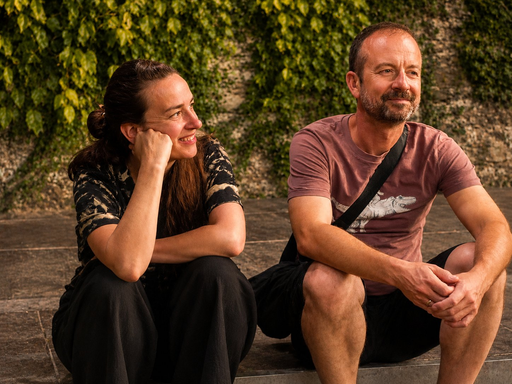

Casoli · Camaiore · Versilia · Toscana
Casoli, the graffiti village above Camaiore. Marked trails into the Alpi Apuane from the door. Beach and promenade at Lido di Camaiore in 30 min. In the middle of nature, with sea and mountain views.
The House
Casa Colletti is a holiday house in Casoli, in the commune of Camaiore, set at 500m above the Versilia coast. The house is roughly 300 years old. We have done it up so it is comfortable to stay in, but we kept its character: the old stone walls, the simple rooms, the slower pace. Casoli is not a museum village either, but a real one where people still live.
It measures 140 square metres across two floors, with three bedrooms, eight beds and two bathrooms. One is en-suite off a bedroom, with toilet and bidet; the other has a shower and a bathtub. There is a gas stove and a fireplace, and the terrace looks out unobstructed in both directions: west to the sea and east to the Alpi Apuane.
The WiFi is stable enough for video calls, and the house is secluded enough to concentrate without distraction. It suits a focused workation, a small team off-site or retreat, a group cooking and walking together, or simply a detox from the fast, always-on world. Work in the morning, walk into the mountains in the afternoon.
The village
Casoli is the small hill village that Casa Colletti sits at the top of, gathered on a slope at 500m above the Versilia coast. It is known across the area as the paese dei graffiti, the village of graffiti, though the works are not painted onto the walls but carved into them.
A sgraffito is made by scratching a design into fresh plaster to reveal a darker layer beneath, an old craft closer to a mason than to spray paint. In Casoli the carved images run across the house fronts through the whole village, showing rural life, old trades, myths and local legends, and each year the festival called Sgraffiti a Casoli adds new work to the old. It is a village full of art, with a story on almost every wall, and walking the lanes you can feel how much life has been carved into the plaster.
Casa Colletti is the last house, where the lanes give out and the trail climbs on into the Alpi Apuane. The village has a fine bar with a terrace over the valley and a view to the sea, with a small alimentari shop in the same place. A ristorante sits above the village, about 20 minutes on foot; an agriturismo and the Il Fondaccio home restaurant in Metato are each around an hour and a half away on foot.
Hiking
The Alpi Apuane are a marble mountain range that rises directly behind the Versilia coast, with peaks above 1800m, and together they form a regional natural park. Michelangelo sourced his marble here, and yet most visitors to the Versilia beaches have no idea the range even exists.
A marked trail begins right at the front door of Casa Colletti, so there is no car, no transfer and no bus standing between you and the mountains; the trailhead is simply the house. From there the routes lead toward Monte Matanna and deeper into the Alpi Apuane park, while the coast stays only 30 minutes away by car, close enough to hike in the morning, swim in the afternoon, or stroll the promenade in the evening.
The house is made for walkers who want a base rather than a programme, which is to say there are no guides, no transfers and no scheduled activities, only the trail and the time to follow it.
A selection, all on foot from Casoli. Times and elevation are approximate.
| Route | Time & climb | What you find |
|---|---|---|
| Grotta all’Onda | approx. 3–4 h, +~400 m | A prehistoric cave at around 700m on Monte Matanna, once a Neanderthal shelter, with small waterfalls at the mouth. Via path 106. |
| Anello Alto Matanna | approx. 5 h loop | Past the Grotta all’Onda to the Rifugio Alto Matanna (1040m). A wide view of the sea, Lake Massaciuccoli and Viareggio. The refuge serves food. |
| Cascate di Candalla | approx. 1.5 h, +160 m | Waterfalls and natural pools in the Lombricese valley, with a 19th-century mill. A summer swimming spot, doable with children. |
| Monte Matanna, 1317m | approx. 6 h return | A summit walk via the Foce di San Rocchino, passing an agriturismo. A full view from the coast deep into the Apuane. |
| Casoli – Metato | approx. 1–1.5 h each way | An old mule track to Metato with a view out to the sea and the Tuscan islands. In Metato, the Il Fondaccio home restaurant and Bar Elo. |
Some paths are partly unmarked. A map or GPS track (such as Komoot or Wikiloc) is recommended.
Climbing
Casoli sits in the middle of what climbers call il Camaiorese, one of the largest sport-climbing areas in Italy, with more than fifty crags and over 1500 routes across the valley. The rock is limestone, slightly overhanging in places, bolted and maintained by the local Magicandalla volunteers since 1985. The first 8a in Tuscany was put up in this valley, and climbers such as Adam Ondra have passed through.
Several of the crags are a 20 to 25 minute walk from the village rather than a drive away. The Cannelot wall at Casoli basso has 19 routes; the Pilastro di Setriana above the village was re-bolted by Magicandalla and runs from 5+ to 8b+ on vertical walls with boulder-problem starts; San Rocchino and Mongololificio are close by. You just walk over from the house and start climbing.
For the high mountains, Monte Procinto carries the Via Aristide Bruni, opened in 1893 and regarded as the first via ferrata in Italy.
Culture
The white in the Apuane is marble. The range has been quarried for more than 2000 years, and Michelangelo came here to choose the blocks for his sculptures; the quarries above Carrara can still be visited, about 45 minutes away.
Down on the plain, Lucca sits behind intact Renaissance walls 40 minutes away and is the birthplace of Giacomo Puccini, whose operas fill the summer festival at Torre del Lago on the coast. Pisa is 50 minutes. Camaiore itself keeps a medieval abbey and a weekly market.
And in the village itself, the sgraffiti carved into the house fronts are a small open-air museum of their own, renewed each year at the Sgraffiti a Casoli festival.
“It is not for everyone. We mean that as a compliment.”
Location
Casa Colletti is in Casoli, a village in the comune of Camaiore, in the Versilia region of Tuscany. The house sits at 500m above sea level as the last building in the village, open on three sides, with the sea to the west and the Alpi Apuane to the east.
The beach at Lido di Camaiore is 30 minutes away by car, with Forte dei Marmi and Viareggio at 40 minutes, Lucca also around 40 and Pisa at 50, while the town of Camaiore, with its weekly market and supermarkets, sits just 15 minutes down the hill.
That supermarket in Camaiore, 15 minutes away by car, is the stop most guests make on arrival, before carrying what they have bought up to the house from the parking area a kilometre below.
The Access
There is no car access to the front door. The nearest parking is a kilometre away in Casoli village, and from there it is 160 steps uphill through the lanes, which means luggage and groceries are carried up by hand.
That rules the house out for anyone with limited mobility, or for anyone who wants a car waiting outside the door, and in the same breath it makes the house ideal for people who are looking for silence, no traffic, and a base from which they can walk straight up into the mountains.
FAQ
Where is Casa Colletti located?
Casa Colletti is in Casoli, a village in the comune of Camaiore, Versilia, Tuscany. The address is Via Colletti 203–204, Casoli, Camaiore (LU). The house sits at 500m above sea level, directly above the Versilia coast.
Can you hike directly from the house?
Yes. A marked trail into the Alpi Apuane natural park starts at the front door. The Alpi Apuane are a marble mountain range rising directly behind the Versilia coast, with peaks above 1800m. No car or transfer is needed to reach the trailhead.
What are the Alpi Apuane?
The Alpi Apuane are a mountain range on the Tuscan coast, directly behind the Versilia riviera. They form a regional natural park with peaks above 1800m. The range has been quarried for white marble for over 2000 years — Michelangelo sourced his marble here. Most visitors to the Versilia beaches do not know these mountains exist.
Is there a sea view, and how far is the beach?
Yes. The terrace at Casa Colletti looks directly west over the Versilia coast and the Tyrrhenian Sea. Lido di Camaiore beach is 30 minutes by car. Forte dei Marmi and Viareggio are 40 minutes.
Is there car access to the house?
There is no car access to the house. The nearest parking is 1km away in Casoli village. From the road it is 160 steps uphill through the village to the front door. Guests carry luggage and groceries by hand. The house is unsuitable for guests with limited mobility.
How many people can stay at Casa Colletti?
The house has 8 beds across 3 bedrooms, for a maximum of 8 guests. One bathroom is en-suite off a bedroom with toilet and bidet; the other has a shower and a bathtub. Total size is 140m² across 2 floors.
Is the WiFi good enough for remote work?
Yes. The WiFi at Casa Colletti is stable and suitable for video calls and remote work. There is a quiet table with a view of the mountains. The house has been used as a workation base.
What is the nearest supermarket and how do you get groceries?
The nearest supermarket is in Camaiore town, 15 minutes by car. Groceries are carried up to the house by hand from the parking area 1km away. Most guests stock up on arrival and cook at the house. There is a full kitchen with gas stove and dishwasher.
Are pets allowed?
Yes. Pets are allowed at Casa Colletti. The house has a garden and a terrace. Please mention your pet when booking.
When can I book and how?
You can book directly by emailing stefanie@germanhosts.com or via Airbnb. The minimum stay is 2 nights. Available dates and prices are shown in the availability calendar on this page.
Is it suitable for families with young children?
Yes, with one caveat: 160 steps separate the parking area from the front door. Children who walk independently are fine. Pushchairs cannot reach the house. The house has no pool.
What is there to do besides hiking?
The Versilia coast — Lido di Camaiore, Forte dei Marmi, Viareggio — is 30 minutes by car. Lucca is 40 minutes, Pisa 50 minutes. The Camaiore market runs weekly. The marble quarry landscape above Carrara is 30 minutes. The house has a gas stove, fireplace, and terrace. Many guests come primarily to cook and walk.
What are the check-in and check-out times?
Check-in is from 12:00 on your arrival date. Check-out is until 16:00 on your departure date. Early check-in or late check-out may be possible by arrangement — please ask when you book.
What is your cancellation policy?
Cancellations made 14 or more days before arrival are fully refundable. Cancellations made less than 14 days before arrival incur a 30% charge on the total booking amount. Cancellations made less than 7 days before arrival are non-refundable.
When is the best time to visit Casa Colletti?
Spring (April to early June) and autumn (September to October) are ideal for hiking into the Alpi Apuane, with mild temperatures around 20°C, clear skies, and fewer crowds. Summer (July to August) is best for beach visits, though the heat can be intense for mountain walks. Winter is quiet and suitable for those seeking solitude, but some mountain trails may be snow-covered and mountain huts close from mid-September to mid-June. The house is open year-round.

The hosts
Lorenzo is from Florence, Stefanie from Frankfurt, and these days we live in Berlin, our adopted home. But our heart stayed in Italy, and over the years we kept finding our way back.
In 2024 we bought a house in the Tuscan mountains, at 500m above the coast, where you can see the sea from the terrace. It has become our counterweight to the city, to the speed of the week and the habit of being reachable at every hour. In Casoli we put the phone down and find our way back to ourselves, and now we can no longer imagine being without it.
The house stands empty for much of the year, so we decided to open it to people who are looking for the same thing we are: a week with no schedule, no traffic, and no reason to check anything. What we hope to give you is the feeling we come here for ourselves.
You book with us directly, and you reach us directly, usually within a day. If you stay, we are always happy to share what we know about the trails, the village and the coast. And if the place leaves you wanting to build something like it for yourself one day, tell us, because that is a conversation we love to have.
— Stefanie & Lorenzo
“Quiet enough to hear what you actually think.”
Availability
Minimum stay 2 nights. Price is €80 per night plus €10 per guest per night plus €100 cleaning fee. Availability is updated manually and confirmed by email.
Booking
Casoli, Camaiore, Tuscany. 500m elevation. 3 bedrooms, 8 beds, max 8 guests. No car access. A trail into the Alpi Apuane from the front door. Minimum stay 2 nights. Pick your dates in the calendar above, or get in touch.